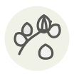

Câpres
Capers
| Nom latin | Capparis spinosa |
|---|---|
| Famille | Condiments & ferments |
| Origine | Bassin méditerranéen |
| Saison | Toute l’année |
| Goût | Salin · Acidulé · Floral · Relevé |
| Prix courant | 15–30 €/kg |
Ce que c’est
La câpre est une fleur qui n’a jamais pu éclore : les boutons se cueillent à l’aube, un à un, sur des buissons qui poussent dans les murs de pierre, puis se confisent au sel ou en saumure. Sur l’île de Pantelleria, la récolte est un art classé à l’UNESCO. Les plus petites — les nonpareilles — sont les plus prisées.
En cuisine
Les câpres au sel sont plus fines que celles en saumure — rincez-les bien. Frites croustillantes à l’huile d’olive, elles deviennent de petits feux d’artifice salés pour le poisson.
S’accorde avec
Citron Tomate Anchois Cabillaud Olive Persil
Même espèce
Câprons (câpres à queue) Feuilles de câprier Câpres au sel
Entre aussi avec
Amourettes Pâte d’anchois Animelles Bœuf Blonde d’Aquitaine Cervelle de veau Tomate datterino
Une erreur ici, ou un oubli ? Dites-le nous